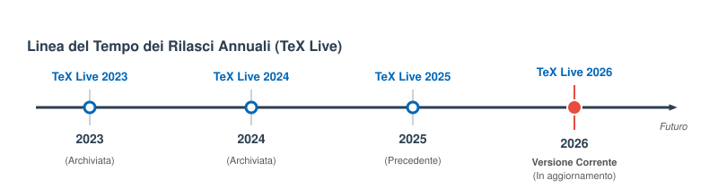
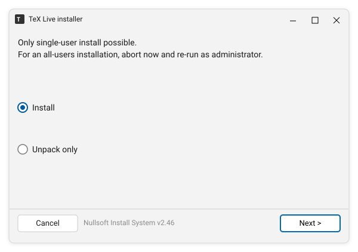
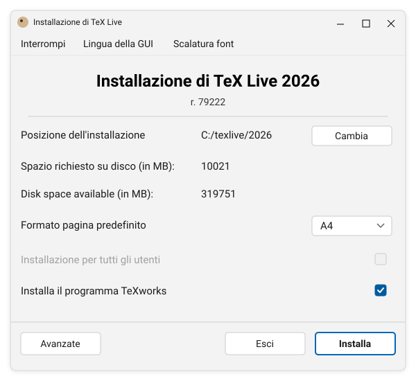
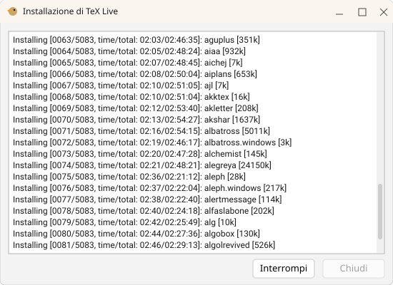
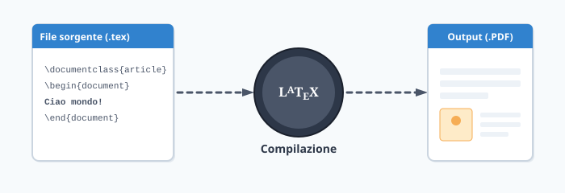
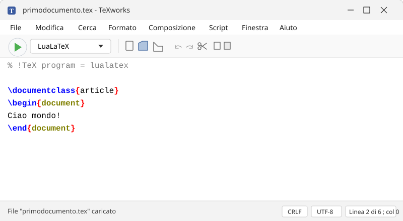

Guida a LaTeX
La ricerca di un modo efficace per presentare un sistema indubbiamente complesso come LaTeX non può che basarsi su questi capisaldi:
- imparare LaTeX è comprenderne la filosofia,
- e utilizzarlo necessita di alcune procedure al PC.
Lo scopo di questa guida è facilitare l’utente che inizia a usare LaTeX. La forma è quella agile di un documento online integrato nel sito GuIT. Ogni contributo che aiuti a bilanciare gli argomenti e migliorare l’utilità è incoraggiato.
Cosa è LaTeX
LaTeX è uno strumento per la tipografia digitale che si è evoluto dalle origini di TeX in un lungo arco di tempo coprendo esigenze sempre più ampie, dalla composizione della bibliografia, al disegno programmato.
Diamone una definizione pratica: LaTeX è un programma che produce un documento PDF a partire da un file di testo chiamato sorgente contenente una descrizione del documento stesso espressa con uno specifico linguaggio.
Compito dell’utente è costruire il file sorgente con un editor di testo. Compito di LaTeX è comporlo in un documento di alta qualità tipografica.
Perciò auguriamo con la lettura della guida il classico Happy TeXing.
Libero e multipiattaforma
Il sistema TeX è libero, ciò significa che è possibile installarlo liberamente anche per uso professionale, e che il codice è consultabile compreso quello dei pacchetti di estensione. È anche multipiattaforma ovvero è disponibile per molti sistemi operativi compreso Windows, macOS e Linux.
Tutti i programmi e la relativa documentazione sono diffusi via Internet da un insieme di server che fanno capo a CTAN il Comprehensive TeX Archive Network.
Differenza tra TeX e LaTeX
In origine alla fine degli anni 70 Donald Knuth creò TeX: il linguaggio e la sua implementazione.
Negli anni 80 Leslie Lamport creò un linguaggio macro di alto livello programmato con le primitive di TeX che semplificava il lavoro di impostazione del documento e la costruzione delle sue parti, che chiamò LaTeX.
In teoria puoi usare TeX per comporre i tuoi documenti, in pratica con LaTeX è più semplice sfruttare TeX e le sue peculiarità.
Con la diffusione di LaTeX cominciarono a nascere nei vari paesi del mondo i TeX User Group. Il GuIT lo è per l’Italia.
Documentazione di sistema
La documentazione è essenziale per un programma come LaTeX. Tutto si basa sull’utilizzo di comandi che vanno usati secondo una precisa sintassi. Ci sono due differenti tipi di documentazione:
- quella di sistema che descrive i comandi di LaTeX o quelli dei pacchetti che vengono distribuiti da CTAN,
- quella per comprendere la filosofia del linguaggio di markup, l’arte della tipografia, le potenzialità del compositore
Se la vostra installazione comprende un certo pacchetto, la sua documentazione
può essere visualizzata a schermo attraverso la comoda utility texdoc con un
comando da terminale. Per esempio
texdoc babel
aprirà a video quella del pacchetto babel dedito alla composizione del testo
con le regole di una certa lingua.
In alternativa è possibile far ricorso al sito texdoc.org.
Installazione locale di TeX Live
La modalità classica di lavorare con il sistema TeX è quello di installarlo sul proprio computer. TeX Live è una distribuzione TeX completa, multipiattaforma, scaricabile liberamente dai server CTAN.
Esistono alternative, quella più nota è forse MiKTeX. Tutto sommato è importante citarle, ed è utile sapere che esistono versioni di TeX Live per specifici sistemi operativi. Per brevità ci focalizzeremo su TeX Live vanilla con le dovute eccezioni.
La cosa più importante da sapere di TeX Live è che ha un ciclo di sviluppo a salti: ogni anno viene rilasciata una nuova versione. In quel momento, i pacchetti della nostra installazione locale non riceveranno più aggiornamenti.

Siamo noi a dover decidere se e quando passare alla versione successiva. Di solito chi utilizza LaTeX in modo continuativo esegue l’upgrade al rilascio della nuova versione di TeX Live per disporre sempre di una piattaforma aggiornata e con nuove funzionalità.
Ogni rilascio annuale di TeX Live si installa allo stesso modo e non elimina la versione precedente che potrà eventualmente essere eliminata successivamente.
Note
In questa guida verrà consigliata la procedura più semplice, la Net installation e con lo schema di installazione completo di TeX Live. Per le altre modalità di installazione o per conoscere gli schemi disponibili consulta questa guida.
L’installazione completa di TeX Live comprende più di 5000 pacchetti, comprendente la documentazione di sistema, i font con licenza libera e occupa circa 10 GiB su disco.
Sono qui descritte le procedure passo passo per l’installazione locale di TeX Live per i principali sistemi operativi desktop, per Windows, per macOS. Per Linux la guida è doppia la prima per una procedura semplice, la seconda da riga di comando e totalmente sicura con verifica crittografica.
TeX Live su Windows
L’installazione di TeX Live su Windows in sei semplici mosse.
Passo 1: file di installazione
Per prima cosa scarica il file d’installazione install-tl-windows.exe ed eseguilo con un doppio click.
Note
Windows è probabile che blocchi l’esecuzione dell’installer poiché non essendo firmato è considerato potenzialmente pericoloso. In tal caso nel dialogo di blocco fai click su “Ulteriori Informazioni”. Apparirà il motivo, ovvero che l’autore dell’eseguibile è sconosciuto, e il pulsante “Esegui comunque”.
Ti troverai in questa schermata:

Premi Next e poi Install per decomprimere in una cartella temporanea i file e lanciare l’installatore vero e proprio.
Tip
Se desideri che TeX Live sia disponibile per tutti gli utenti accreditati sul computer Windows, esegui l’installatore come amministratore scegliendo la voce corrispondente del menù contestuale con un click destro sull’icona
Passo 2: Avvio dell’installazione
A questo punto dovresti essere alla schermata principale dell’installer.

Non è necessario fare modifiche nel dialogo per il tipo di installazione che vogliamo fare tranne che per la scelta di installare o meno anche l’editor TeXWorks, comodissimo perché offre la doppia finestra affiancata codice/documento quindi consigliato.
Annota la directory “Posizione dell’installazione” che potrebbe essere utile in seguito, e premi Install.
Passo 3: Scaricamento pacchetti
Ottimo. Ultima fase: l’installer scarica e installa i pacchetti da uno dei server CTAN. È una procedura lenta poiché i pacchetti sono veramente tanti. Poco importa, attesa ripagata.

Al termine dell’installazione dei pacchetti, vengono eseguite le configurazioni finali e la generazione dei formati.
Passo 4: test dell’installazione
Ora tutto è pronto per fare un semplice test. Premi il tasto Windows e digita i
caratteri shell. Fai invio sulla corrispondenza migliore per aprire una
finestra di Windows PowerShell. Al prompt digita il seguente comando e fai
un invio per confermarne l’esecuzione:
lualatex --version
Dovresti ottenere una serie di informazioni di versione che confermano che il sistema è pronto all’uso.
Per ulteriori informazioni sull’installazione di TeX Live per Windows fai riferimento alla pagina ufficiale windows.html.
Passo 5: aggiornamenti
Ogni giorno vengono rilasciati aggiornamenti conviene quindi periodicamente eseguire dal terminale il comando:
tlmgr update --all
Passo 6 (raccomandato): verifica dei pacchetti
Fare in modo che gli aggiornamenti di TeX Live siano verificati è ottima cosa. Vediamo in dettaglio.
Una volta in aggiornamento l’utility tlmgr stampa una prima riga che indica il
repository di riferimento:
tlmgr.pl: package repository https://ctan.net/systems/texlive/tlnet/ (not verified: gpg unavailable)
Dall’ultima parte del messaggio è chiaro che in questo caso i pacchetti in
aggiornamento NON saranno verificati con gpg. Questo capita di norma su
Windows o MacOS ma non su Linux dove di solito gnuPG è già installato.
Risulta facilissimo installarlo anche in Windows (o MacOS) con quest’unico comando che installa il necessario all’interno di TeX Live prelevando il necessario dal repository di Norbert Preining, uno dei principali sviluppatori di TeX Live:
tlmgr --repository http://www.preining.info/tlgpg/ install tlgpg
Facile, rapido e assolutamente consigliato.
TeX Live su MacOS
Per gli utenti Mac esiste una versione di TeX Live specifica denominata MacTeX adattamento al sistema di installazione per questo sistema operativo. La versione minima richiesta è la 11 Big Sur.
Gli eseguibili girano nativamente sia su piattaforma Intel sia su quella Apple Silicon con i processori della serie M.
Passo 1: scarica MacTeX.pkg
Con un click alla pagina ufficiale di download oppure direttamente da qui scarica il pacchetto MacTeX.pkg di circa 6.4 GiB di peso.
Passo 2 (opzionale): sicurezza
Nella pagina di download sono disponibili le stringhe di verifica del file
scaricato, sia per il checksum md5 sia per sha512, il primo è più veloce ma
è il secondo a essere molto più sicuro.
MD5
Apri il Terminale di macOS (premi Cmd + Spazio e digitando “Terminale”).
Digita il comando md5 seguito da uno spazio, poi trascina e rilascia il file
scaricato all’interno della finestra del terminale (questo inserirà
automaticamente il percorso corretto del file). Il comando sarà simile a questo:
md5 ~/Downloads/MacTeX.pkg
Premi invio per ottenere la stringa di checksum che dovrebbe essere identica a quella qui riportata. Se non lo è il file è corrotto e deve essere scaricato di nuovo.
SHA-512
Con sha512 i passi sono simili ai precedenti ma le intenzioni sono differenti:
non solo si vuole accertare che il file scaricato sia quello corretto salvandoci
da errori di rete ma sopratutto controllare se il pacchetto sia sicuro al 100%.
Su macOS, l’algoritmo SHA-512 viene gestito in modo nativo tramite il comando
shasum con l’opzione -a 512 che specifica di utilizzare la variante a 512
bit. Come prima apri il Terminale di macOS. Il comando finale sarà simile a
questo:
shasum -a 512 ~/Downloads/MacTeX.pkg
Confronta la stringa sha-512 con questa comando con quella presente
qui.
Passo 3: installazione
Fai click sopra al file scaricato. L’installer apre un dialogo di benvenuto, la pagina con le informazioni generali e la licenza d’uso, e la pagina finale in cui compare il bottone “Install”. Conviene lasciare l’installazione completa.
Passo 4: test
Apri un Terminale e digita il comando
lualatex --version
Se leggi le informazioni di versione tutto è pronto per lavorare con LaTeX sul tuo Mac.
Passo 5: aggiornamenti
MacTeX installa anche l’applicazione TeX Live Utility in Applications/TeX/.
Essa è l’interfaccia grafica per operare sulla TeX Live e aggiornarla
periodicamente.
Altre utilità
In MacTeX ci sono anche due editor: TeXShop e TeXworks, entrambe molto comodi per lavorare con i file sorgenti di LaTeX perché offrono le righe magiche e la ricerca diretta e inversa tra codice e PDF composto.
E come non menzionare il programma BibDesk che gestisce database bibliografici.
TeX Live su Linux
I passi qui descritti potrebbero dover essere adattati alla tua distribuzione Linux perché riferiti alle distro Debian e derivate, come Ubuntu.
Per distro differenti mandaci la tua guida all’installazione. Per come fare vai alla sezione Contribuire alla guida.
Tip
Se non volete digitare i comandi copiateli e incollateli nel terminale con un CTRL + Shift + V
Passo 1: archivio
Scarica l’archivio contenente il necessario da questo link CTAN e procedi con un click destro sulla sua icona a scompattarlo (voce “Estrai” o simile).
Passo 2: avvio
Apri la cartella install-tl-20* appena creata e con un click destro sullo
sfondo libero da icone scegli “Apri Terminale qui”. Nella finestra del terminale
digita il comando seguente e fai invio per eseguirlo:
sudo ./install-tl
Nell’interfaccia testuale, alla linea “Enter command:” premi la lettera I per installation e invio per confermare. Non è necessario modificare paramentri.
I singoli pacchetti saranno scaricati con la protezione del protocollo di rete, dai server ufficiali CTAN. L’operazione può richiedere da 30 minuti a un’ora o più, in base alla tua connessione e alla velocità del computer. Vengono poi generati i file di formato e di ricerca file.
Al termine apparirà il testo di benvenuto:
Benvenuto in TeX Live!
See /opt/texlive/2026/index.html for links to documentation.
The TeX Live web site (https://tug.org/texlive/) provides all updates
and corrections. TeX Live is a joint project of the TeX user groups
around the world; please consider supporting it by joining the group
best for you. The list of groups is available on the web
at https://tug.org/usergroups.html.
...
Passo 3: temp file
Seleziona sia l’archivio compresso che la directory temporanea non più
necessaria e premi Canc per eliminarle.
Passo 4: configurazione
A questo punto TeX Live deve essere configurata manualmente non potendo contare sugli automatismi del sistema di pacchetti proprio della distribuzione Linux.
Istruiamo Debian/Ubuntu su dove trovare i programmi di TeX Live appena installati.
Apri il file .profile nel tuo editor di testo preferito. Si tratta di un file
nascosto della home dell’utente. Premendo CTRL + H si attiva/disattiva la
visualizzazione delle rispettive icone.
Vai in fondo al file e incolla le seguenti righe:
# addition for TeX Live 2026
export PATH=/usr/local/texlive/2026/bin/x86_64-linux:${PATH}
Esci salvando e ricarica senza riavviare le impostazioni d’ambiente con il comando:
source ~/.profile
Passo 5: Test di funzionamento
Verifichiamo che il sistema riconosca correttamente LaTeX. Digita nel terminale:
lualatex --version
Se compare il testo che inizia con This is LuaHBTeX, Version 1.24.0... la
procedura è terminata con successo. Il tuo ambiente TeX Live è installato,
aggiornato e sicuro.
Passo 6: aggiornare TeX Live
L’utility di aggiornamento tlmgr ha necessità dei privilegi di amministratore
dovendo scrivere in una directory di sistema. Se lanciamo il comando con sudo
l’utility non verrà trovata perché non saranno riconosciti i percorsi
nell’ambiente di esecuzione amministrativo. La soluzione più semplice
consisterebbe nel digitare tutto il percorso ma non è comodo.
Basta creare un alias all’interno del file .bash_aliases. Si tratta di un
nome che prende il posto di un comando lungo utilizzato spesso.
Apri il file .bash_aliases nella home dell’utente. Se non esiste crealo, e
aggiungi le righe seguenti per creare l’alias sutlmgr:
# addition for TeX Live 2026
alias sutlmgr="sudo /usr/local/texlive/2026/bin/x86_64-linux/tlmgr"
Potrai usare sutlmgr da terminale per acquisire gli aggiornamenti dei
pacchetti. I comandi più comuni sono:
# per controllare la presenza di aggiornamenti:
tlmgr update --list
# per aggiornare tutto:
sutlmgr update --all
# per controllare se un pacchetto è installato:
tlmgr show <nome_del_pacchetto>
TeX Live sicuro su Linux
I passi qui descritti potrebbero dover essere adattati alla tua distribuzione Linux. Ci riferiremo a distro Debian e derivate, come Ubuntu. Per distro differenti mandaci la tua guida all’installazione. Per come fare vai alla sezione Contribuire alla guida.
Tutta la procedura prevede solo comandi da terminale, come da tradizione Linux, e la massima sicurezza di livello crittografico per un’installazione configurata, pronta all’uso e sicura.
Tip
Se non volete digitare i comandi copiateli e incollateli nel terminale con un CTRL + Shift + V
Passo 1: pulizia
Sul tuo sistema potresti avere la TeX Live installata tramite il gestore di pacchetti della distro. Nessun problema ma qui parliamo di una TeX Live fresca, installata direttamente da CTAN, al di fuori del sistema dei pacchetti.
Se vuoi eliminarla apri un terminale e esegui i tre comandi:
sudo apt update && sudo apt upgrade
sudo apt remove --purge texlive*
sudo apt autoremove
Passo 2: firma GPG
Il team di TeX Live firma i file con una chiave crittografica come descritto in questa pagina. Per importare la chiave pubblica esegui il comando:
gpg --auto-key-locate=wkd --locate-keys "tex-live@tug.org"
L’output del comando è qualcosa di simile a:
gpg: chiave 0D5E5D9106BAB6BC: chiave pubblica "TeX Live Distribution <tex-live@tug.org>" importata
gpg: Numero totale esaminato: 1
gpg: importate: 1
pub rsa2048 2016-03-19 [SC]
C78B82D8C79512F79CC0D7C80D5E5D9106BAB6BC
uid [ sconosciuto] TeX Live Distribution <tex-live@tug.org>
sub rsa2048 2016-03-19 [E]
sub rsa2048 2016-03-19 [S] [scadenza: 2027-07-13]
Una volta importata la chiave sarà possibile verificare i file firmati dal Team.
Passo 3: archivio
Scarichiamo il necessario in una directory temporanea, chiamiamola temp-tl,
posizionata nella home dell’utente. I file da scaricare sono:
- l’installer ufficiale
- il file con il suo checksum
sha-512 - e il file di firma del checksum
Ecco i comandi:
cd ~
mkdir temp-tl
cd temp-tl
wget http://mirror.ctan.org/systems/texlive/tlnet/install-tl-unx.tar.gz
wget http://mirror.ctan.org/systems/texlive/tlnet/install-tl-unx.tar.gz.sha512
wget http://mirror.ctan.org/systems/texlive/tlnet/install-tl-unx.tar.gz.sha512.asc
Passo 4: sicurezza
Effettueremo una doppia verifica: prima controlleremo l’autenticità del checksum
per essere certi che nessuno abbia alterato i codici di controllo, poi
verificheremo con esso l’integrità del file compresso install-tl-unx.tar.gz.
Verifica del checksum
gpg --verify install-tl-unx.tar.gz.sha512.asc install-tl-unx.tar.gz.sha512
con l’output:
gpg: Firma effettuata mar 16 giu 2026, 01:49:32 CEST
gpg: utilizzando la chiave RSA D8F2F86057A857E42A88106A4CE1877E19438C70
gpg: Firma valida da "TeX Live Distribution <tex-live@tug.org>" [sconosciuto]
gpg: ATTENZIONE: questa chiave non è certificata con una firma fidata.
gpg: Non ci sono indicazioni che la firma appartenga al proprietario.
Impronta digitale chiave primaria: C78B 82D8 C795 12F7 9CC0 D7C8 0D5E 5D91 06BA B6BC
Impronta digitale della sottochiave: D8F2 F860 57A8 57E4 2A88 106A 4CE1 877E 1943 8C70
L’importante è leggere alla terza riga “Firma valida…”. Ottimo.
Verifica dell’archivio
Ora che il checksum è sicuro, verifichiamo con esso l’archivio:
sha512sum --check install-tl-unx.tar.gz.sha512
Il responso è:
install-tl-unx.tar.gz: OK
E se l’output mostra OK, il file è integro, sicuro al 100% e pronto per l’uso. Diversamente elimina il file e ripeti il download da un altro mirror.
Passo 5: estrazione e installazione
Ora che l’archivio ha superato i controlli di sicurezza, possiamo procedere
all’estrazione e all’installazione vera e propria. L’archivio si estrae con
l’utility tar che genera una cartella in cui ci sposteremo:
tar -xzf install-tl-unx.tar.gz
cd install-tl-20*
Volendo installare TeX Live in una cartella di sistema, per l’avvio
dell’installer sono necessari i privilegi di amministratore che assumiamo
tramite il comando sudo. Verrà richiesta la password:
sudo ./install-tl
Scegliamo di installare TeX Live nella directory di sistema /opt/texlive/2026.
Tutti gli utenti potranno utilizzarla. Nell’interfaccia testuale, alla linea
“Enter command:” premi la lettera D per directories e invio per confermare.
Nel sottomenù dai il numero 1 e digita la directory /opt/texlive/2026 e
conferma al solito con il tasto invio. Poi R per ritornare al menù principale e
I per avviare l’installazione.
I singoli pacchetti saranno scaricati con la protezione del protocollo di rete, dai server ufficiali CTAN. L’operazione può richiedere da 30 minuti a un’ora o più, in base alla tua connessione e alla velocità del computer. Vengono poi generati i file di formato e di ricerca file.
Al termine apparirà il testo di benvenuto:
Benvenuto in TeX Live!
See /opt/texlive/2026/index.html for links to documentation.
The TeX Live web site (https://tug.org/texlive/) provides all updates
and corrections. TeX Live is a joint project of the TeX user groups
around the world; please consider supporting it by joining the group
best for you. The list of groups is available on the web
at https://tug.org/usergroups.html.
Add /opt/texlive/2026/texmf-dist/doc/man to MANPATH.
Add /opt/texlive/2026/texmf-dist/doc/info to INFOPATH.
Most importantly, add /opt/texlive/2026/bin/x86_64-linux
to your PATH for current and future sessions.
Logfile: /opt/texlive/2026/install-tl.log
Passo 6: eliminazione temp-tl
Eliminiamo la directory temporanea non più necessaria.
cd ~
rm -rf temp-tl
Passo 7: configurazione
A questo punto TeX Live deve essere configurata manualmente non potendo contare sugli automatismi del sistema di pacchetti proprio della distribuzione Linux.
Istruiamo Debian/Ubuntu su dove trovare i programmi di TeX Live appena installati.
Apri il file .profile nel tuo editor di testo preferito. Si tratta di un file
nascosto della home dell’utente. Premendo CTRL + H si attiva/disattiva la
visualizzazione delle rispettive icone.
Vai in fondo al file e incolla le seguenti righe:
# addition for TeX Live 2026
export PATH=/opt/texlive/2026/bin/x86_64-linux:${PATH}
Esci salvando e ricarica senza riavviare le impostazioni d’ambiente con il comando:
source ~/.profile
Passo 8: Test di funzionamento
Verifichiamo che il sistema riconosca correttamente LaTeX. Digita nel terminale:
lualatex --version
Se compare il testo che inizia con This is LuaHBTeX, Version 1.24.0... la
procedura è terminata con successo. Il tuo ambiente TeX Live è installato,
aggiornato e sicuro.
Passo 9: aggiornare TeX Live
L’utility di aggiornamento tlmgr ha necessità dei privilegi di amministratore
dovendo scrivere in una directory di sistema. Se lanciamo il comando con sudo
l’utility non verrà trovata perché non saranno riconosciti i percorsi
nell’ambiente di esecuzione amministrativo. La soluzione più semplice
consisterebbe nel digitare tutto il percorso ma non è comodo.
Basta creare un alias all’interno del file .bash_aliases. Si tratta di un
nome che prende il posto di un comando lungo utilizzato spesso.
Apri il file .bash_aliases nella home dell’utente. Se non esiste crealo, e
aggiungi le righe seguenti per creare l’alias sutlmgr:
# addition for TeX Live 2026
alias sutlmgr="sudo /opt/texlive/2026/bin/x86_64-linux/tlmgr"
Potrai usare sutlmgr per acquisire gli aggiornamenti dei pacchetti. I comandi
più comuni sono:
# per controllare la presenza di aggiornamenti:
tlmgr update --list
# per aggiornare tutto:
sutlmgr update --all
# per controllare se un pacchetto è installato:
tlmgr show <nome_del_pacchetto>
LaTeX online
Le tecnologie web si sono evolute davvero tanto fino a rendere possibile per l’utente utilizzare sofisticate applicazioni all’interno di un browser. Anche per LaTeX esistono servizi web che offrono:
- compilazione di sorgenti senza bisogno di installare e mantenere il sistema localmente sul proprio PC,
- e, molto più importante, la possibilità di lavorare in più persone contemporaneamente sugli stessi file sorgenti.
Per LaTeX esistono diversi editor online con caratteristiche più o meno complete: Overleaf, Cocalc, TeXPage, Papeeria e molti altri.
I più diffusi Overleaf e Cocalc hanno inoltre la caratteristica di poter essere usati, sia pure con alcune limitazioni, del tutto gratuitamente.
Overleaf
Il sito più famoso, che ha assorbito altri fornitori di servizi analoghi, è certamente Overleaf che permette nella versione gratuita di avere un numero illimitato di progetti e un collaboratore.
Una volta fatto il log-in abbiamo la possibilità di creare “progetti” che possono essere condivisi con i nostri collaboratori (il numero di utenti con cui è possibile condividere dipende dal piano, gratuito o a pagamento). La condivisione può avvenire in due modi: il collaboratore può essere editor del progetto o solo visualizzatore.
L’editor di Overleaf è user friendly offrendo il completamento automatico (specificando se si tratta di un comando, un ambiente o altro) e la composizione automatica delle referenze incrociate.
In Overleaf troviamo tantissimo materiale: sia sull’editor che su LaTeX in generale, sia per utenti inesperti che per utenti con necessità più avanzate.
Cocalc
Cocalc non è solo un editor/compilatore per LaTeX online, ma mette a disposizione degli utenti moltissimi strumenti, tra cui un ambiente Linux (Ubuntu 24.04) abbastanza completo, il software statistico R, un compilatore Julia, l’ambiente Sagemath, il software matematico Octave, librerie Python, intelligenza artificiale, e molto altro.
Queste caratteristiche ne permettono un utilizzo molto avanzato che permette di lavorare in più collaboratori ai nostri progetti. Tuttavia se non si sottoscrive un abbonamento si hanno a disposizione risorse molto limitate in termini di memoria e CPU disponibile che ne rendono l’uso molto lento.
Per approfondire
Ottima fonte sugli strumenti web per l’editing dei sorgenti del sistema LaTeX e la loro compilazione è il recente articolo “Usare LaTeX online” sulla rivista del GuIT ArsTeXnica al numero 36 del 2025 a firma di Grazia Messineo e Salvatore Vassallo.
Primo documento
Proviamo a scrivere il semplice testo “Ciao mondo” su una pagina bianca. Per
prima cosa, serve un editor di testi; in teoria se ne può scegliere uno
qualsiasi. Bene, sceglietene uno e create un file di testo dal nome
primodocumento.tex.
Note
la distribuzione TeX Live comprende l’editor TeXworks semplicissimo da usare
Adesso copiate nel file queste righe di codice:
\documentclass{article}
\begin{document}
Ciao mondo.
\end{document}
Queste quattro semplici righe di codice istruiscono il compositore a
- creare un documento di uno stile predefinito, in questo caso la classe article, ma ce ne sono tanti altri i cui dettagli possono essere approfonditi in un secondo momento
- iniziare un documento
\begin{document} - stampare la stringa
Ciao mondo. - terminare il documento
\end{document}
Il linguaggio che si usa nei sorgenti LaTeX è un linguaggio di markup: le informazioni che servono a comporre i documenti sono “marcate” da appositi comandi.
Ecco il risultato della compilazione del vostro primo sorgente: primodocumento.pdf.
Facile!
Matematica
LaTeX è famoso per la qualità con la quale si possono comporre formule matematiche. Ecco un esempio:
Ciao formula: \( E = m c^2 \). Ora, ancora testo.
ottenuto con il codice seguente:
Ciao formula: \( E = m c^2 \). Ora, ancora testo.
Nell’esempio precedente una breve formula matematica è stata inserita all’interno del testo corrente. In gergo si dice che quella è una formula inline. La matematica nei documenti può comparire anche in regioni a sé stanti: le cosiddette formule in display. Eccone un esempio:
\begin{equation} f(n, \lambda) = \left(\sqrt{1+\frac{1}{n^4}}-1\right)^{\lambda} \end{equation}
ottenuto con il codice seguente:
\[
f(n, \lambda) = \left(\sqrt{1+\frac{1}{n^4}}-1\right)^{\lambda}
\]
Si notino i comandi di markup che servono a comporre le varie parti della
formula: ad esempio \sqrt{...} serve a disegnare il simbolo di radice quadrata
e a comporre i simboli che vanno sotto radice descritto tra graffe.
Un altro esempio di markup è il comando che compone la frazione (fraction): nel
codice \frac{1}{n^4} il primo argomento tra parentesi graffe è il numeratore e
il secondo è il denominatore.
Compilare il sorgente
I programmi TeX sono a riga di comando. Compilare un sorgente significa eseguire il compositore in un terminale passandogli il nome del file.

Il comando va dato scrivendo il nome del compositore, per esempio lualatex,
seguito da uno spazio e dal nome del file con o senza estensione. Terminata la
digitazione del comando si preme il tasto invio per eseguirlo.
lualatex primodocumento.tex
Quello riportato è il comando di compilazione del sorgente del capitolo precedente della guida.
Compilare con TeXworks
Gli editor di testo dedicati a LaTeX hanno molte facilitazioni tra cui la compilazione con un click. Di più, spesso il PDF è mostrato a fianco del testo sorgente ed è possibile fare click in un punto per spostarsi nel corrispondente codice.
Uno degli editor più utilizzati è TeXworks. Per impostarlo a compilare con
lualatex basta scrivere come prima riga del file sorgente questo commento:
% !TeX program = lualatex
Queste righe di commento vengono chiamate righe magiche e influenzano l’editor
su diversi aspetti uno dei quali è appunto stabilire come verrà compilato il
file al click sul bottone nella barra degli strumenti o alla pressione della
combinazione di tasti CTRL + T.

Compositori
Assieme all’originale compositore tex ne esistono molti altri. luatex è uno
degli ultimi arrivati e, come dice il nome, include un interprete
Lua, un linguaggio di programmazione semplice ed
efficiente.
Per avvalersi di questa e delle altre nuove funzionalità, come quella importante
dell’utilizzo dei font Open Type, è consigliabile utilizzare il compositore
luatex con il formato LaTeX ovvero il comando lualatex.
Preambolo
Prima cosa da fare è definire il tipo di documento specificando una classe. Si tratta di codice che stabilisce tutta una serie di impostazioni che caratterizzano una data tipologia di documento.
Esiste un insieme predefinito di classi LaTeX, in particolare le tre seguenti:
- article
- report
- book
Pacchetti
Organizzazione di un progetto
Il linguaggio
Comandi e opzioni
Modifiche al font
Elenchi
Struttura del documento
Dati
Titolo : Guida a LaTeX
Codice progetto : guidaLaTeX
Online dal : giugno 2026
Link : https://guitex.org/guide/guidaLaTeX/index.html
Versione : v0.1
Data : 2026-06-23
Contribuire alla guida
Come per le altre iniziative dell’associazione GuIT, questa guida vuole facilitare gli inizi nell’uso di LaTeX, un sofisticato strumento software per comporre documenti di elevata qualità e precisione.
Denominata guidaLaTeX questa guida è libera e open source. Se desiderate migliorarla sono previste queste modalità per contribuirvi:
- inviare opinioni, segnalazioni, proposte o contributi — preferito è il formato Markdown — all’indirizzo di posta elettronica webteam at GuITeX
- inviare un Pull Request verso il repository ufficiale della guida che si trova al link repository guidaLaTeX.
Licenza d’uso
Tutto il materiale del progetto Guida di base a LaTeX è rilasciato con licenza Creative Commons Attribuzione - Non commerciale - Condividi allo stesso modo 4.0 License.
Tu sei libero di riprodurre, distribuire, comunicare al pubblico, esporre in pubblico, rappresentare, eseguire e recitare quest’opera e di modificare quest’opera alle seguenti condizioni:
-
Attribuzione: devi attribuire la paternità dell’opera nei modi indicati dall’autore o da chi ti ha dato l’opera in licenza e in modo tale da non suggerire che essi avallino te o il modo in cui tu usi l’opera.
-
Non commerciale: non puoi usare quest’opera per fini commerciali.
-
Condividi allo stesso modo: se alteri o trasformi quest’opera, o se la usi per crearne un’altra, puoi distribuire l’opera risultante solo con una licenza identica o equivalente a questa.
Produzione della guida
Questa guida è stato costruita con mdbook a partire da file testuali in formato Markdown.
Contributors
Questa è la lista delle persone che hanno contribuito o che contribuiscono a questa guida su LaTeX, con materiale, osservazioni o nuove idee.
Un grande ringraziamento a loro!
- Claudio Beccari
- Agostino De Marco
- Grazia Messineo
- Salvatore Vassallo
- Roberto Giacomelli robitex